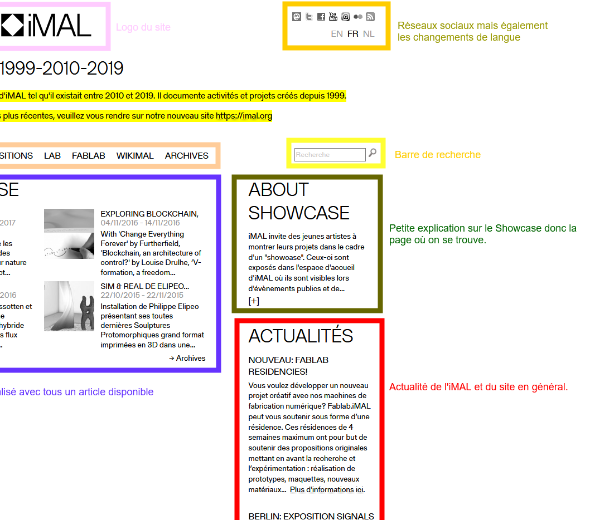
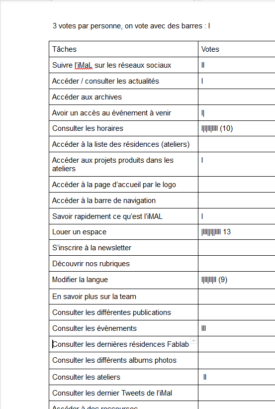

Case-Study
Nos "vacances"
Les prémices de RUX ont débuté avant la période de blocus. On devait réaliser une vidéo d’un test utilisateur sur le site de l’iMAL. Une fois la vidéo enregistrée, on devait l’analyser et réaliser un article médium.
Après ce travail d’analyse, on a tous pu prendre pleinement connaissance du site de l’iMAL. Nous savions à peu prêt tout ce qui n’allait pas sur le site. Notre conclusion était que le site était surchargé et que les infos utiles étaient noyés dans le site.
Retour en cours

Au premier cours sur RUX, on s’est réparti en équipe de 4. Je me suis mis avec Anais, Tanguy et Maxime. On a déjà fait des travaux de groupe et ça c’était bien passé.
La première étape était de réaliser un petit résumé du test utilisateur que chaque groupe a réalisé. On s’est mis sur discord pour en parler et le rédiger, cela ne nous a pas pris énormément de temps.
Le résumé donne ceci :
“L’iMAL est un centre créatif situé à Bruxelles qui organise des événements et des ateliers en rapport avec la création artistique allant jusqu’au domaine plus scientifique. Ils mettent à disposition leurs machines aux particuliers pour des créations personnelles.”
Réflexion au réveil

Au deuxième cours qui se déroulait de bon matin. Nous avons chacun fait un inventaire de contenu de deux pages du site. Il fallait regrouper chaque élément des pages et dire leur utilité ou leur fonction. On les a toutes passées en revue une fois que tout le monde avait fini. Ça m'a aidé à mieux visualiser la structure globale du site.
Le choix décisif

Dans la deuxième heure de ce cours, nous avons listé toutes les différentes actions qu’il était possible de réaliser sur le site. Une fois listée, place à la démocratie. Les tasks les plus votés sont celles qui sont choisis pour la suite du travail. Les groupes devaient se répartir les tâches élus. Mon groupe a pris la recherche, qui au premier abord semble être un élément très simple du site mais qui au final cache bien son jeu.
Après la répartition, mon groupe et moi avons réfléchi sur les besoins utilisateurs de la recherche. On ne s’est pas contenté de dire “ça recherche” nous avons vraiment essayé de pousser l’analyse mais on a remarqué qu’on tourne vite en rond. En plus des besoins utilisateurs, nous avons listé des améliorations qui pouvaient aider l’utilisateur avec la recherche.
Audit

Cette étape du travail m’a un peu donné du mal. Nous n’avions qu’une heure pour réaliser l’analyse de notre fonctionnalité (pour moi la recherche) sur 5 sites différents. Ce qui donne environ 12 minutes par site. Le plus dur dans tout ça était de trouver les sites à analyser. Quasiment tous les sites utilisent une barre de recherche donc j’ai eu un peu de mal pour faire mon choix. J’ai finalement réussi à finir mon analyse dans les temps.